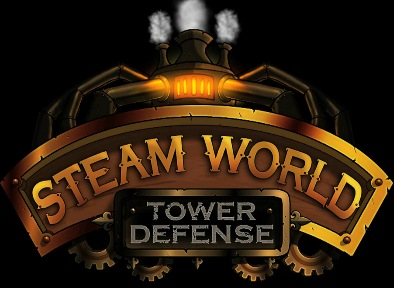
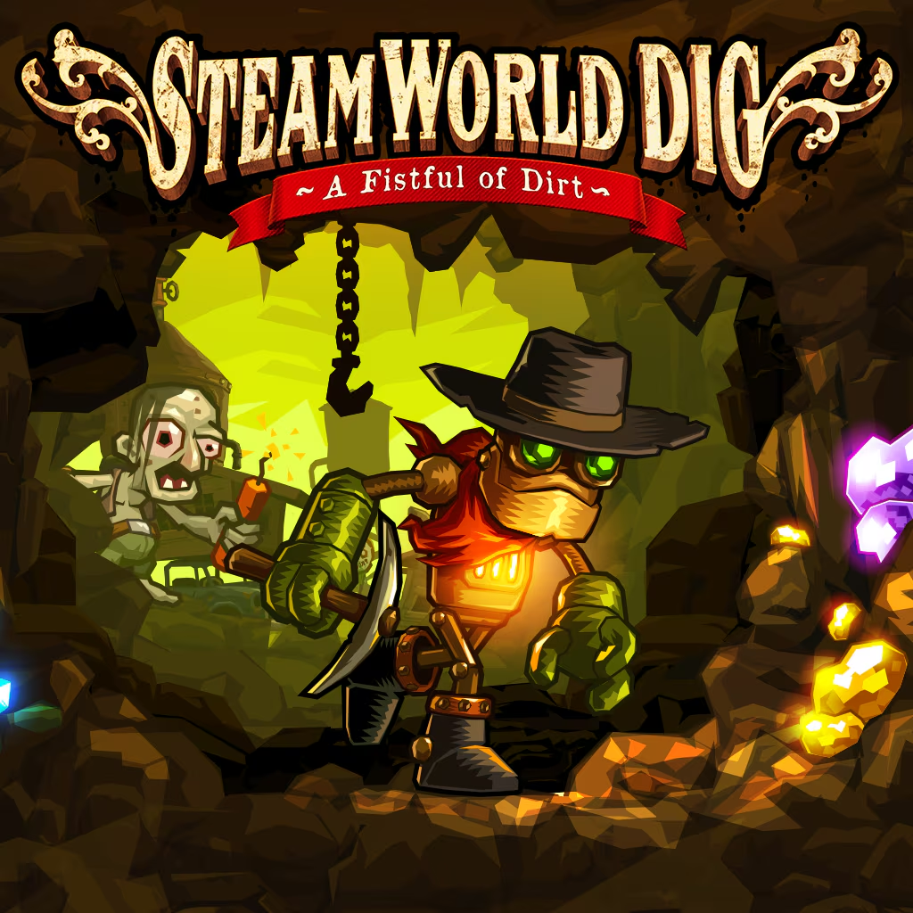
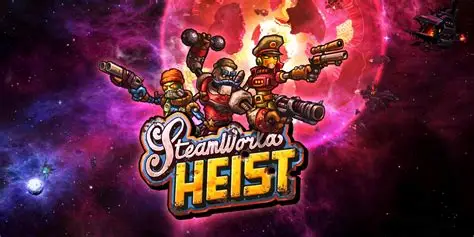
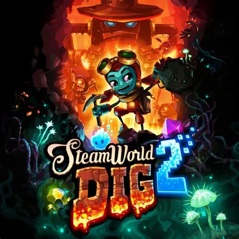
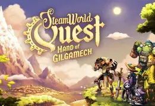
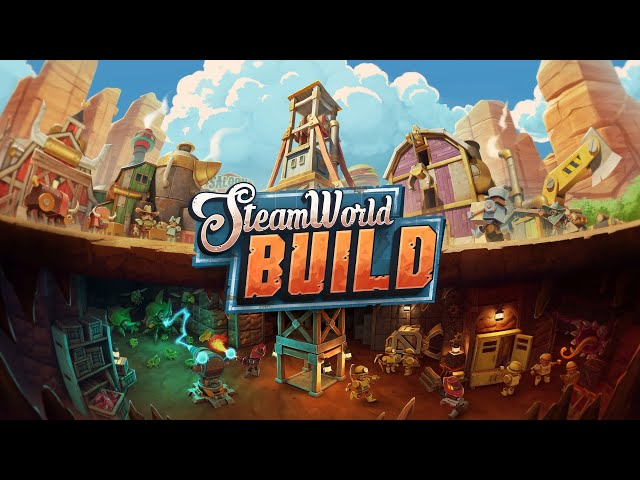
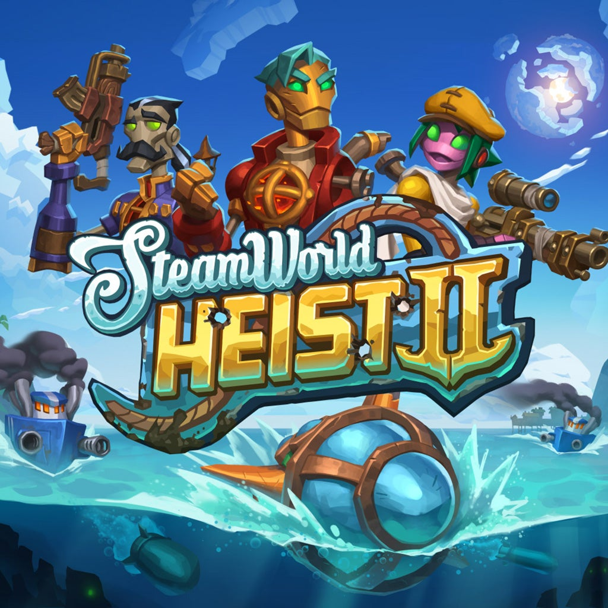

SteamWorld Tower Defense
2010
Dorothy goes on a quest to find Rusty after he had saved Tumbleton.
As the rest of Tumbleton waits, she goes to multiple areas, and digs to the center of the Earth to find Rusty.

SteamWorld Dig
2013
As Rusty, you must venture around your (Dead) uncle's mine,
and bring the people of Tumbleton back. You do this while finding mysterious technology, until you dig to the center of the Earth.

SteamWorld Heist
2015
SteamWorld Heist: As Piper Faraday, you go on a mission once, but most of your team gets scrapped.
You and Gabriel SeaBrass live. You must create a big team, defeat the royalists and scrappers,
and some mysterious foes, while getting reputation and new crew members!

SteamWorld Dig II
2017
Dorothy goes on a quest to find Rusty after he had saved Tumbleton.
As the rest of Tumbleton waits, she goes to multiple areas, and digs to the center of the Earth to find Rusty.

SteamWorld Quest
2019
Dorothy goes on a quest to find Rusty after he had saved Tumbleton.
As the rest of Tumbleton waits, she goes to multiple areas, and digs to the center of the Earth to find Rusty.

SteamWorld Build
2023
Dorothy goes on a quest to find Rusty after he had saved Tumbleton.
As the rest of Tumbleton waits, she goes to multiple areas, and digs to the center of the Earth to find Rusty.

SteamWorld Heist II
2024
Dorothy goes on a quest to find Rusty after he had saved Tumbleton.
As the rest of Tumbleton waits, she goes to multiple areas, and digs to the center of the Earth to find Rusty.